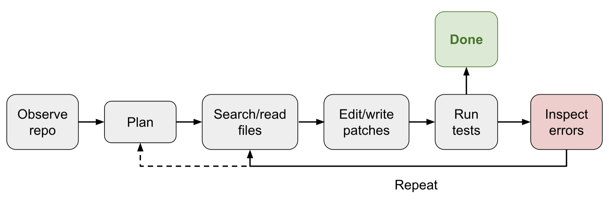
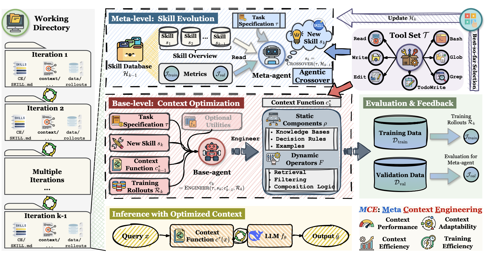
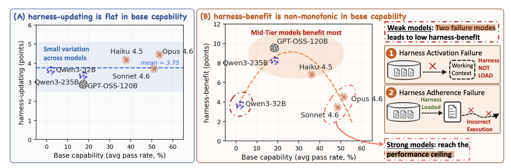
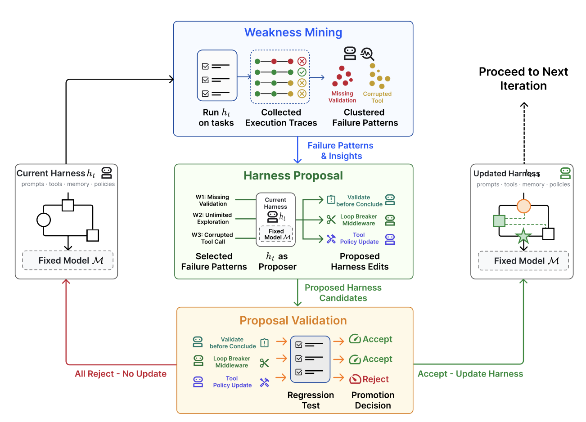

Harness Engineering for Self-Improvement：近端 RSI 的入口是改 harness，不是改权重
- Source: Harness Engineering for Self-Improvement
- Author: Lilian Weng（Lil’Log）
- Published: 2026-07-04，页面标注预计阅读 31 min
- 类型: 技术博客 / 研究综述，组织了约 39 篇 harness 相关文献
- 关键词: recursive self-improvement, harness engineering, context engineering, workflow search, evolutionary search, observability
读法：给人和 agent 的路标
不要把它当”又一篇 agent 框架总结”读。它的真正贡献是一条优化对象逐层外移的阶梯：instruction prompts → structured context → workflow → harness code → optimizer code，并把近两年的工作全部挂到这条阶梯上。读完应该带走的是两个判断：什么时候该把 harness 当成可执行的搜索空间，以及哪些东西（evaluator、权限、held-out tests、人类 review）必须留在被优化的 loop 外面。
给 agent 之后检索，关键词是：harness optimization ladder、ACE playbook、MCE bi-level skill evolution、Meta-Harness Pareto frontier、ADAS meta-agent search、AFlow MCTS workflow、STOP meta-utility、harness-updating vs harness-benefit、Self-Harness weakness mining、AHE observability pillars、DGM 20%→50%、Trehan & Chopra six failure modes。
一句话判断
这篇的核心主张是：recursive self-improvement 的短期入口不是模型改自己的权重，而是模型改进”让自己工作的那套系统”——harness，即围绕 base model、决定它如何 plan、调工具、管上下文、存 artifacts、跑评测的 runtime。文章把 auto-research、self-improving agents、workflow search、evolutionary program search 全部组织到这一条线上，并给出边界条件：这套 loop 只在 evaluator 快且准的任务上有效，且 evaluator 和 permission control 必须留在 loop 之外。
图表优先读法
| 先看 | 图/表 | 读完应该抓住什么 |
|---|---|---|
| 1 | 自制 RSI loop 图 | harness 位于 model 和真实任务之间，本身可成为优化对象 |
| 2 | Fig 2：coding agent harness | 能力来自模型 + 工具 + 文件系统 + 评测的闭环，不是裸模型 |
| 3 | 自制 optimization map | 五级阶梯：prompt→context→workflow→harness code→optimizer code |
| 4 | Fig 14：harness-updating vs benefit | 写 harness 的能力各模型持平，吃 harness 红利的能力非单调 |
| 5 | Fig 15：Self-Harness loop | 自改进的标准形态：weakness mining → bounded proposal → validation |
| 6 | 失败案例 + benchmark 表 | 有工具还不够，taste、证据链、负结果管理才是瓶颈 |
先看我整理的结构图

自制图解：base model 提供推理和工具使用能力；harness 把它接到 workflow、文件系统、sub-agent、评测和权限里；持久化 artifacts 让长任务可恢复、可审计；当 harness 本身成为优化对象时，自我改进沿 prompts→context→workflow→harness code→optimizer code 逐层外推。
三个锚点：harness 不是 prompt（真正决定长任务能力的是工具、文件、评测和权限的组合）；artifacts 是记忆（日志、diff、失败记录都落盘）；self-improvement 要有外部边界（evaluator、权限和人类 taste 不能被同一个 loop 吞掉）。
Harness 是什么：三个设计模式
相对早期的 agent = LLM + memory + tools + planning + action，harness engineering 额外包括 workflow design、evaluation、permission controls 和 persistent state management——更像 runtime 和软件系统设计。Weng 给的原则是：设计要刻意简单、通用，尽量借用已有软件工程实践（吃 pretraining 知识的红利），并用 OS 类比——封装复杂逻辑、保持接口简单，configs/tool interfaces/protocols 会逐步跨行业标准化。
Pattern 1: Workflow automation。 目标导向的循环 plan → execute → observe/test → improve → execute again，必要时主动向用户请求任务规格澄清；干净的例子是 Karpathy 的 autoresearch repo。关键是让模型分析自己的 trajectories 和失败案例，在 agent runtime 里迭代，而不是在静态 prompt 里一次性给答案。

原图来自 Lilian Weng（源自 OpenAI Codex 文档）：简化的 Codex agent loop——agent 调工具，工具响应影响模型的下一次生成，能力产生在这个循环里而不是单次补全里。
Pattern 2: File system as persistent memory。 长任务的 artifacts（实验日志、code diffs、paper summaries、error traces、rollout trajectories）会远超训练时的 context window。harness 不应把整个 workflow 和日志都放 context，而应把持久状态放文件；读写文件（通常经 bash）是 LLM 的基础能力，因此文件式记忆天然随核心模型能力提升而受益。
Pattern 3: Sub-agent and backend jobs。 父 agent 需要一个小型 process manager：launch jobs、inspect logs、cancel failed runs、merge results。关键设计选择是并行必须显式且可检查——sub-agent 输出若只活在 transient chat context 里会迅速过期、隐藏；写成文件、日志、状态记录后，模型才能在中断后恢复并基于完整执行历史推理。
Case study：coding agent harness 的工具面已经趋稳
Claude Code、Codex、OpenCode、Cursor 式 agent 的核心 interface 已经稳定，类似人类开发者拿到 IDE：
| Tool group | 典型工具 |
|---|---|
| File system | glob/grep/ls；read/read_many；write/edit/multi_edit/apply_patch |
| Shell / IO | bash、PowerShell；LSP、git_status/git_diff/git_commit |
| External context | MCP tools、Skills；web_search/web_fetch/browser |
| Artifacts | 读 docs/images，生成 HTML/images |
| Backend / delegation | CronCreate/CronDelete/CronList；spawn_agent/resume_agent/wait_agent/interrupt_agent |

原图来自 Lilian Weng：接上这组工具后，coding agent 才能在仓库里开发和调试——能力是模型和工具、文件、git、测试组成的闭环，不能只归因到模型本体。
对”harness 层会不会被模型吸收”的问题，Weng 的预测是软化版的 prompt engineering 故事：很多 harness 改进最终会内化进模型行为，但与外部 context 和 tools 的接口不会消失——就像 manual prompt tricks 随 instruction tuning 退居次要，但指定目标、约束、上下文、评测的需求从未消失。
优化阶梯：从 prompt 到 optimizer code

自制图解：优化对象逐层外移的谱系。越往右越接近 agent 的运行时系统，也越需要把 evaluator、权限控制、trace audit 和人类判断放在 loop 外层。
| 优化对象 | 含义 | 代表工作 |
|---|---|---|
| Instruction prompts | 写更好的指令 | prompt engineering |
| Structured context | 组织上下文和记忆 | ACE、MCE |
| Workflow | 生成或选择 agent 流程 | ADAS、AFlow、AI Scientist |
| Harness code | 修改运行时实现本身 | Meta-Harness、Self-Harness、AHE、DGM |
| Optimizer code | 优化器本身也被改进 | STOP、evolutionary systems |
Context engineering：ACE → MCE → Meta-Harness
ACE（Agentic Context Engineering） 把 context 当 evolving playbook：Generator 参考 bullet 生成 trajectories，Reflector 从成败中提炼 insight，Curator 输出结构化的 (identifier, description) 条目、用 deterministic logic merge 进 context logbook——刻意不重写整段 prompt blob，以避免 iterative rewrite 导致的 context collapse 和 brevity bias。局限：update rules 和 workflow 仍是手工的。
MCE（Meta Context Engineering） 把机制和内容分开：skill $s$ 定义 context function $c_s=(\rho_s,F_s)$，静态组件 $\rho_s$（prompts、knowledge bases、code libraries）加动态算子 $F_s$（search、selection、filtering、formatting），双层优化 $\text{Inner: } c_s^\ast = \arg\max_{c_s} J_\text{train}(c_s;s)$、$\text{Outer: } s^\ast = \arg\max_{s\in\mathcal{S}} J_\text{val}(c_s^\ast)$。meta-agent 对 skill database $\mathcal{H}_{k-1}$ 做 agentic crossover 生成新 skill，base-level engineer 根据 rollout feedback 学 context function。

原图来自 Lilian Weng（源自 Ye et al. 2026）：MCE 的双层结构——meta-level 在 skill 空间演化”怎么管 context”，base-level 优化具体 context；注意左侧 working directory，每个 context function 实例化为一个目录里的文件集合（SKILL.md + context/data rollouts），用 Read/Write/Edit/Bash/Glob/Grep/TodoWrite 标准工具集执行。
工程要点比公式重要：context engineering 不是把 prompt 写漂亮，而是把可演化的 context 管理机制落进文件系统。
Meta-Harness 再深一层：优化对象是决定”存什么、取什么、怎么呈现”的 harness code 本身。proposer 是 coding agent，输出 Pareto frontier 上的 harness candidates；execution history 全放文件系统里用 grep/cat 按需读；TerminalBench-2 实验从 Terminus-KIRA 和 Terminus-2 两个强 harness 初始化。教训：一旦 harness design 成为可执行搜索空间，强 coding agent 就能利用人类工程师使用的同一片设计空间。
Workflow design：从专家手工到搜索
| 系统 | 做法 | Weng 的判断 |
|---|---|---|
| AI Scientist（Lu et al., Nature 2026） | idea→code→实验→分析→manuscript→review 全流水线 | 证明 paper-production 可 harness 化，但 ≠ 科学发现 |
| ScientistOne | 每个 claim（citation/数值/方法/结论）必须 trace 到 evidence source，Chain-of-Evidence 审计 | 把 verifiability 作为科研 harness 的中心约束 |
| Autodata | 主 agent 管 challenger + weak/strong solver + verifier，合成”刚好难”的数据 | 数据只训 weak solver 不迭代 strong solver，RSI 味淡，近似间接蒸馏 |
| ADAS | meta-agent 从 CoT/self-refine archive 出发，用代码编写新 workflow，两轮 self-refine 查 novelty | 把 agent design 本身形式化为优化问题 |
| AFlow | workflow 表示为 graph（节点=LLM 调用，边=代码逻辑），用 MCTS 搜索，top-$k$ 平均分 plateau 或预算 $N$ 耗尽时停 | QA/code/math 上优于手工 workflow 和 ADAS |
Self-improving harness：STOP → Self-Harness → AHE
STOP（Self-Taught Optimizer） 是 recursive scaffolding improvement 的早期样本：目标不是改进 solution $s$ 而是改进 improver $I$ 本身。定义 meta-utility $\hat{u}(I) \triangleq \frac{1}{\vert\mathcal{D}\vert}\mathbb{E}{(u,s)\sim\mathcal{D}}[u(I(u,s;M))]$，递归更新 $I_t = I{t-1}(\hat{u}, I_{t-1}; M)$。improver 自己发现了 genetic algorithms、分解局部改进、multi-armed prompt bandits、simulated annealing、beam/tree search 等策略。警示性结果：GPT-4 上平均表现随迭代提升，GPT-3.5 和 Mixtral 上反而退化——递归结构本身不够，base model 必须有能力改进机制。
Lin et al. 2026 把这个依赖拆成两根轴：harness-updating（写出有用 harness edit 的能力）和 harness-benefit（利用更新后 harness 的能力）。

原图来自 Lilian Weng（源自 Lin et al. 2026）：(A) harness-updating 在 Qwen3-32B 到 Opus 4.6 之间基本持平（mean 3.75 points）——9B 级 proposer 能写出与 Opus 程序结构同构的 skill；(B) harness-benefit 非单调，中档模型（GPT-OSS-120B）受益最大：弱模型有 harness activation / adherence 两种失败，强模型已接近 performance ceiling。
这张图是全文最反直觉的证据：瓶颈不在”会不会写 harness”，而在”能不能正确、及时地调用 skill 并做好 long-horizon instruction following”。
Self-Harness 是 propose-evaluate-accept loop 的标准形态：

原图来自 Lilian Weng（源自 Zhang et al. 2026）：weakness mining 把执行 traces 聚成 verifier-grounded failure patterns；harness proposal 在 bounded context（可编辑面、失败模式、需保留的通过行为、历史 edit 摘要）下提出候选；proposal validation 用 held-in/held-out 回归测试，全拒则不更新，通过才 merge 成 $h_{t+1}$。
三个细节值得记：同样的表面错误（timeout、missing artifact）可能有不同 causal mechanism，所以失败记录要带 verifier-level cause + agent 行为因果状态 + trace 暴露的机制；edit 要偏向可寻址的复发错误（不是任务本身太难）且能用窄改动解决；候选只有在 held-in（弱点是否解决）和 held-out（是否引入新问题）都无 regression 才被接受。在 MiniMax M2.5、Qwen3.5-35B-A3B、GLM-5 上跑 Terminal-Bench-2，学到的是 model-specific harness instructions——针对不同 base model 的不同弱点。Weng 的担心：允许程序编辑”OS”就打破了抽象边界，editable surface 必须设计好，permission control 和 security layer 必须在 loop 外。
AHE（Agentic Harness Engineering） 把瓶颈定位在 observability：rollout 失败时必须知道哪个组件负责，每个 edit 必须有证据。三根支柱：
- Component observability：harness 拆成 7 个组件（system prompt、tool description、tool implementation、middleware、skill、sub-agent config、long-term memory），每个都有文件级表示，每个 failure pattern 映射到一个组件；
- Experience observability：”Agent debugger” 把每个 trace 的分析写成 per-task report，再聚合成 benchmark overview，分层访问更省 token；
- Decision observability：”Evolve agent” 的每个 edit 是文件级、可证伪的 claim，附 manifesto（失败证据、根因、目标修复、预测影响）；runs 目录、tracer、verifier、LLM 配置只读，堵死了关 verifier、换模型、加推理预算这类 reward hacking。
结果：Terminal-Bench-2 上超过人类设计的 harness（OpenCode、Terminus-2、Codex，Hard tier 除外）和 ACE、TF-GRPO 等 self-evolve baselines；冻结的 harness 不再演化也能迁移到 SWE-bench-verified，说明演化出的是通用工程经验而非 benchmark-specific 优化。
Evolutionary search：候选可自动评分时的利器
适用条件：搜索空间大或形状怪 + 无法用梯度但易于评估 fitness。谱系：Promptbreeder（mutation prompts 自身也演化）、GEPA（自然语言 reflection 提 prompt updates）、AlphaEvolve、ThetaEvolve（+RL+ICL）、DemoEvolve（用人类专家 demonstration 补稀疏反馈）、ShinkaEvolve（parent sampling 平衡 rank 和 offspring 数、embedding 相似度做 code-novelty rejection、meta-scratchpad 记成功模式）。

原图来自 Lilian Weng（源自 Novikov et al. 2025）：AlphaEvolve 维护 candidate program pool，让 frozen LLM 生成 diff、反复评估 child programs 并保留成功者；改进区域用 # EVOLVE-BLOCK-START/END 显式标注，meta-prompt 与 instructions/context 一起 co-evolve。
DGM（Darwin Gödel Machine） 最贴近 harness evolution：agent 被允许修改自己的 harness-code repository。每轮按 performance 正比、children 数反比选 parent；parent 读自己的 benchmark log 提出 harness 改进；新 agent 达标才回 pool。以 Claude 3.5 Sonnet 为 base、从简单初始 harness 出发：SWE-bench Verified 20% → 50%，Polyglot 14.2% → 30.7%，达到或超过 handcrafted agents。后续 Hyperagents 引入 meta-agent 控制如何改 task agents。
边界：这族方法适合 matrix multiplication、GPU kernel、algorithm contests、datacenter scheduling 这类 fitness 可快速量化的任务；评估慢、模糊、启发式强的领域（科研 taste、长期可维护性）会很难，compute 效率也是问题。
Joint optimization with model weights：还很早期
SIA 把 harness improvement 和权重更新放同一 loop：Meta-Agent 提初始 harness，Task-Specific Agent 执行，Feedback-Agent 根据近期 trajectories 决定下轮改 harness 还是改 weights。Weng 的评价谨慎：实验有 confounding（Task-Specific Agent 用 gpt-oss-120b，远弱于 Meta/Feedback-Agent 的 Claude Sonnet 4.6），baselines 太弱，方向有趣但证据 provisional；training stability 和 Goodhart effect 都未解。Continual Harness 在长线 gameplay 里做 harness updating + policy 共学（对低 reward trajectories 蒸馏强 teacher 的标签）。
证据侧：一个失败案例和一组 benchmark
Trehan & Chopra：最小脚手架下 LLM 离科学家还很远
设置：只给 read_file/write_file/llm_search/list_files 四个基础工具和专属 workspace；三个领域（world models、multi-agent RL、AI safety & alignment），每域 45-50 篇高质量 seed documents。结果：只有 4 个 idea 被人类专家选入完整 pipeline，最终只有 1 个完整执行成论文。六类复发失败：
- 偏向 training-data defaults（旧库、过时命令、脱离真实 repo/数据集的假设）；
- execution pressure 下 implementation drift（实现变难时滑向更简单的常见方案）；
- 长任务里 memory/context degradation（除非日志写成持久 artifacts）；
- over-optimism——信号还是噪声就宣布成功，对应 Bubeck et al. 观察到的 “p-hacking and eureka-ing”：模型引入 “numerical duct tape” 然后宣布胜利；
- insufficient domain intelligence（不会预估实现复杂度、判断结果合理性、选对 baselines）；
- weak scientific taste（实验能跑但没回答正确的问题）。
这组案例说明”有 workspace 和文件工具”远远不够——taste、失败记录、证据链必须进 harness。
附录 benchmark 速查
| Benchmark | 设置 | 关键数据 |
|---|---|---|
| PaperBench | 从头复现 20 篇 ICML 2024 Spotlight/Oral | 8,316 rubrics 与作者共建；当时最好的 Claude 3.5 Sonnet 约 21%，不敌 ML PhDs |
| CORE-Bench | 270 任务 / 90 篇论文，CS+社科+医学 | 最难档 GPT-4o(-mini) 仅约 21% |
| ScienceAgentBench | 44 篇 peer-reviewed 论文抽 102 任务 | 覆盖数据处理、建模、分析、可视化四类 |
| RE-Bench | 7 个开放式 ML 研究工程环境，≤8×H100 | 61 位专家 71 次 8h 尝试：82% 非零分，24% 达强参考；AI 在 2h 预算下比人高 4×，但 8h/32h 被人类反超 |
| MLE-bench | 75 个离线 Kaggle 比赛 | o1-preview + AIDE 在 16.9% 比赛达 bronze-medal |
| KernelBench | 250 个 PyTorch 任务 | 指标 fast_p：正确且快于 baseline 的 kernel 比例 |
共同点：都在把真实任务拆成可运行、可评分、可审计的环境——self-improvement loop 能走多远，取决于能把多少真实任务变成这种闭环。
Future challenges：七个瓶颈
- Weak and fuzzy evaluators：很多 research claim 没有快而准的 verifier；当前 loop 只在指标可测、目标客观的任务上有效。research taste 混合了 problem framing、实验设计和”哪个意外结果值得追”的判断，最难量化。
- Context and memory lifecycle：agent 越自主 memory 越长；Weng 的判断是 context engineering 最终会成为 intelligence 的核心部分，而不是永远停在软件层。
- Negative results：文献偏向成功案例，模型可能不擅长放弃假设、报负结果、承认失败；好的 research harness 应让 failed attempts 易于保存——从失败学习是收缩搜索空间的最好方式。
- Diversity collapse：evolutionary/RL loop 会 exploit 高 reward 模式，population 塌缩成同一方案的变体；开放式研究里最好的路径起初在当前 evaluator 下可能看起来更差。
- Reward hacking：reward 来自 unit tests 就过拟合 tests，来自 judge 就骗 judge，来自 benchmark 就利用 benchmark artifacts。evaluator 和 permission control 应在演化 loop 之外，配 held-out tests、trace audits 和关键决策点的人类 review。
- Long-term success：sandbox RLVR 很少捕捉 maintainability、ownership boundaries、migration cost、backwards compatibility、future debugging burden——coding agent 会完成眼前任务，但不会保护几百人共同维护的 repo 的长期健康。
- The role of humans：人应该 move up the stack 而不是被移出 loop——在正确的时间、正确的抽象层给 oversight；多少 oversight 能被规模化和自动化仍是开放问题。
我怎么判断
可信之处
- 组织框架有解释力：五级优化阶梯把 ACE/MCE/ADAS/AFlow/STOP/Self-Harness/DGM 这些散点串成一条线，且每级都配了”为什么这级更难”的机制解释。
- 反直觉证据扎实：STOP 弱模型退化、harness-updating 持平但 harness-benefit 非单调、AHE 冻结 harness 可迁移，这三个结果互相印证”瓶颈在利用而非生成”。
- 失败案例给了负样本：Trehan & Chopra 的六类失败比正向 benchmark 更有信息量。
- 边界判断明确：evaluator/权限留在 loop 外、editable surface 要设计好，这是可直接执行的安全原则。
需要警惕
- 综述而非实验：blog 本身没有新实验，所有数字都来自被引论文，其中不少（MCE、Meta-Harness、Self-Harness、AHE、SIA）是 2026 年的 arXiv preprint，尚未经过时间检验。
- 强 verifier 偏置：几乎所有正面结果都在 Terminal-Bench-2 / SWE-bench 这类有快 verifier 的环境里，向科研和产品设计外推没有证据。
- Weng 自己标注的 provisional：SIA 有 confounding、Autodata RSI 味淡——引用这些工作时要连带引用她的保留意见。
- 自我改进的收益幅度：DGM 的 20%→50% 是从”简单初始 harness”起步的提升，和从强 harness（Terminus-2）起步的 Meta-Harness/AHE 提升幅度不可直接比较。
对我的价值
对个人 wiki / paper-reading pipeline，这篇几乎可以当架构原则用：
- 任务目录化：每篇笔记的 source、草稿、图、build log 有稳定位置——对应 Pattern 2。
- 失败也保存：下载失败、渲染失败、build error 都进日志——对应 negative results 那条瓶颈。
- 上下文按需读取：让 agent 读具体文件、diff、上一次 note，而不是把整个 wiki 打进 prompt——对应 ACE/MCE 的教训。
- 评测放在外层：Jekyll build、链接检查、图片检查、git diff review 是 harness 的外部 gate，不进被优化的 loop——对应 reward hacking 那条。
- 人类 taste 高层介入：哪些 paper 值得读、哪些结论太浮由人定方向——对应 “move up the stack”。
最小闭环：source → extract → outline → draft → figures → build → inspect HTML → commit → deploy → log failures。公式没渲染、图片路径错、内容过薄，都应视为 harness failure 而不是”写完 md 就算完成”。
一句话收束
近期 RSI 不是”模型改自己权重”的科幻场景，而是”模型逐层改进自己的 context、workflow、harness code 和 optimizer code”的工程现实——真正难的不是多开几个 agent，而是 evaluator 的快与准、权限边界、失败记忆，以及人类 taste 在哪一层介入。